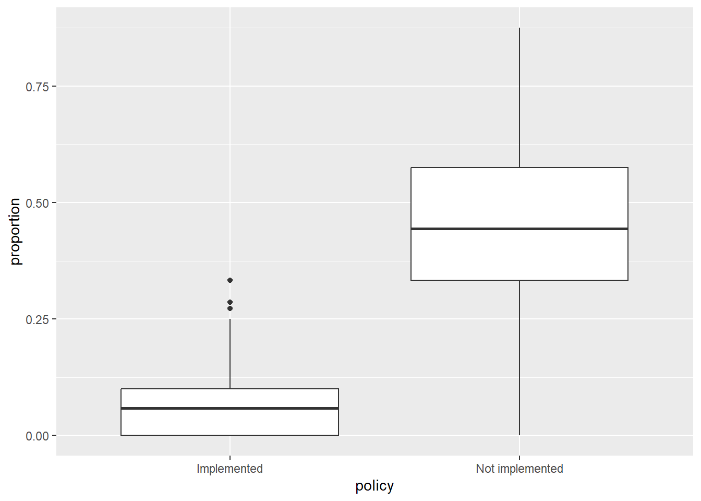
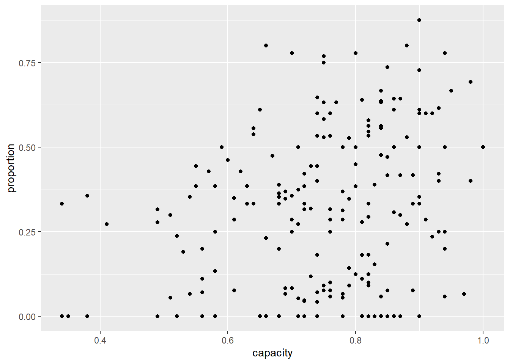
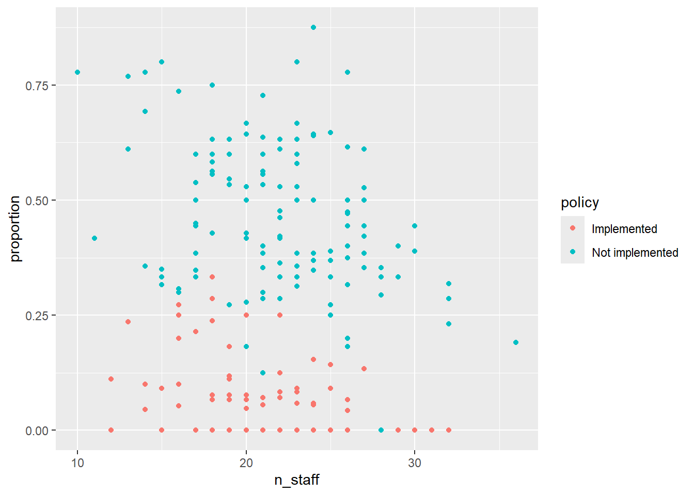
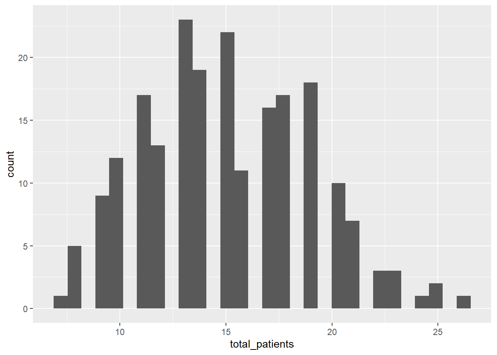
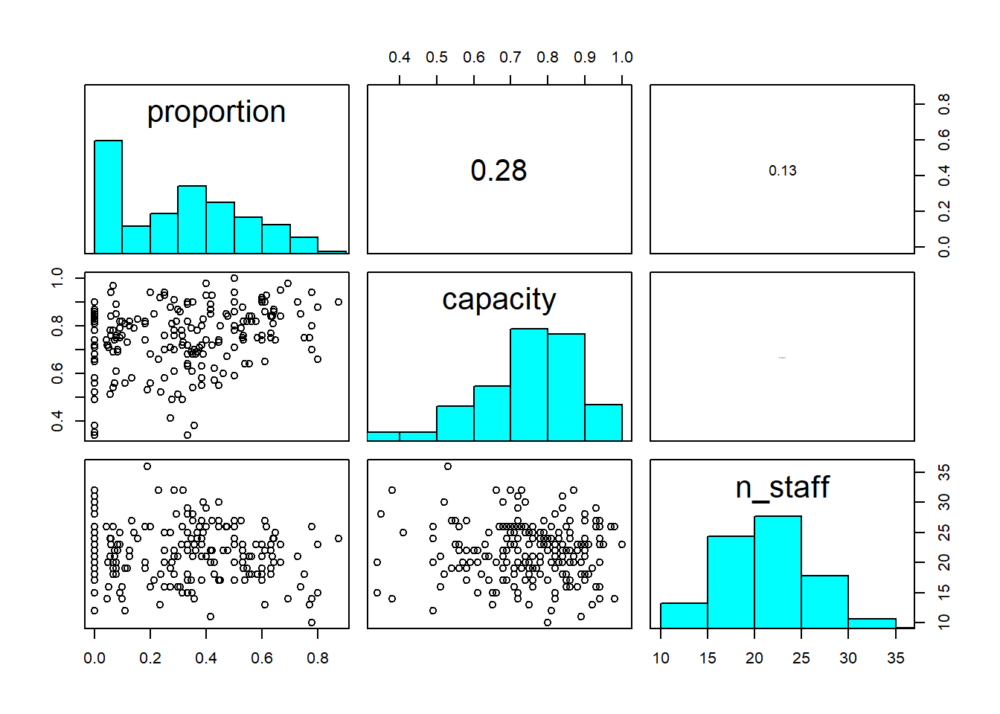
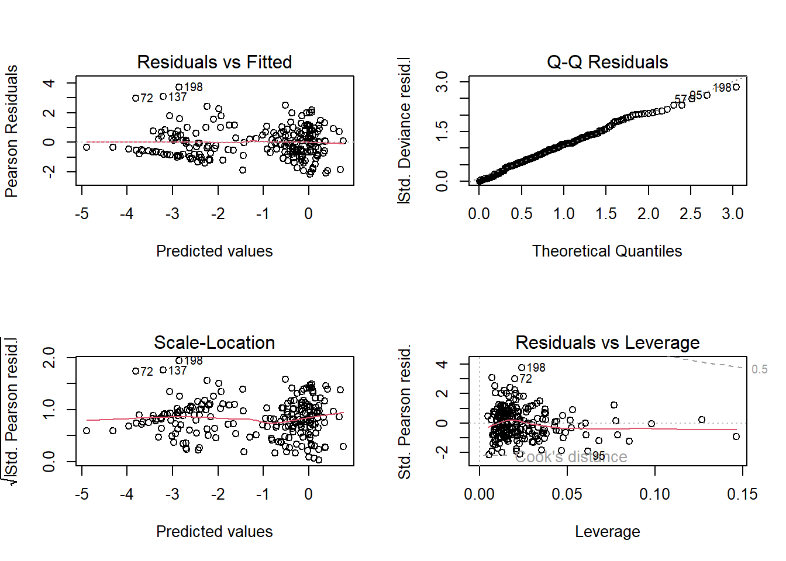
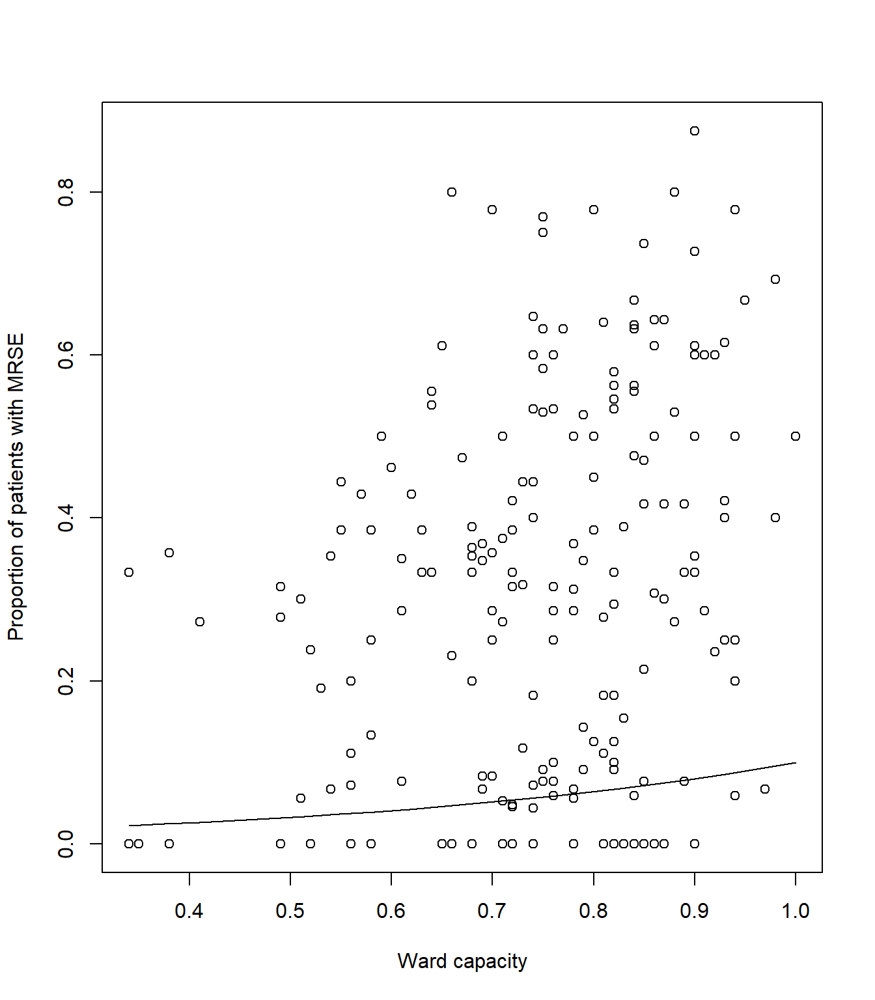
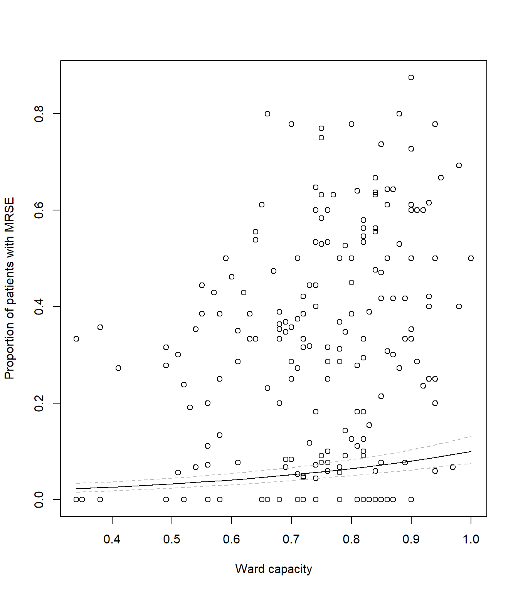
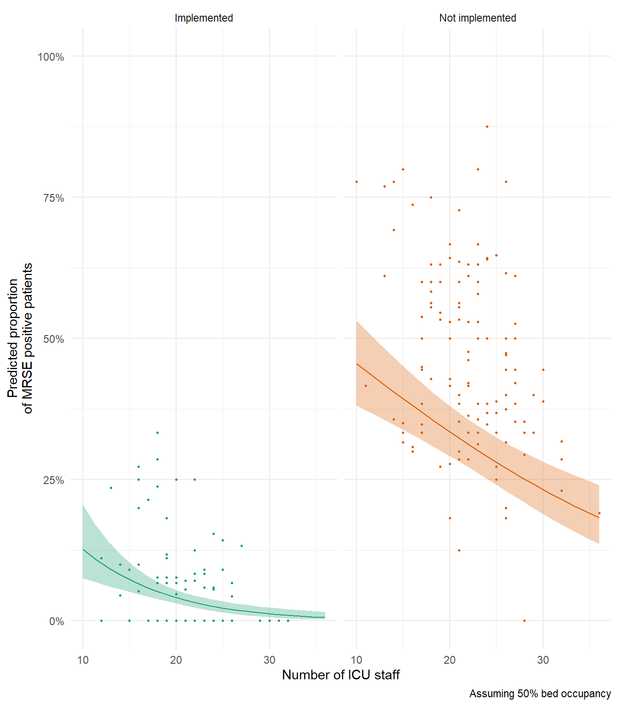

For the GLM exercises, we’ll use the workflow we suggested in the first GLM overview lecture as a template, specifically:
Know your research question!
Think about your response variable (stochastic).
Think about the process behind the data (deterministic).
Understand the data that you’ve collected (plot it!)
Combine into a model that can answer your question.
Fit the model.
Check your assumption(s).
Answer your question.
The researchers who collected this data wanted to understand how a
policy decision, as well as other covariates, were associated with the
prevalence of Multi-drug Resistant Staphylococcus epidermidis
(MRSE, a relative of MRSA) amongst patients in different Intensive Care
Unit (ICU) wards. Data was collected from all 210 ICU wards in the UK
and included the total number of patients in each ICU ward
(total_patients) as well as how many of them were MRSE
positive (mrse).
Specifically, the researchers wanted to understand how three
explanatory variables were associated with the prevalence of MRSE: 1)
the number of staff working in an ICU (staff); 2) current
capacity of the ward (capacity, expressed as a proportion
of beds currently occupied); and 3) whether or not the respective
hospital board had implemented a policy concerning the reduced use of
Chlorhexidine bathing (policy). Chlorhexidine usage was of
primary interest, as the researchers believed this bathing was, in part,
responsible for increasing prevalence of MRSE due to overuse leading to
anti-microbial resistance (since chlorhexidine is an anti-microbial
agent). Additionally, the researchers felt it was likely that the
effectiveness of the policy depended on the number of ICU staff to
implement it (so would require an interaction between staff
and policy). In total, data was collected from 210 ICU
wards (\(n = 210\)), where each
observation is from a single ICU ward in a hospital.
As concisely as possible, write down the research question that can be answered with our analysis.
From the information provided in the brief above, we are already able to determine a suitable distribution to use when fitting the model (as before, ignore that today’s class is called \(Binomial\) GLMs). Here, we’ve been told two pieces of information that help us determine that a \(Binomial\) is a sensible distribution:
We have a count of “successes” (here, “success” is paradoxically a patient who is infected with MRSE)
We have the total number of patients present on the ward.
So, we know the minimum count of “successes” (i.e. infected patients) will be zero but we also know we have an upper bound; We can’t have more patients infected with MRSE than we have patients on the ward. This is the type of data that a \(Binomial\) distribution excels in accounting for. Our stochastic element of the model would therefore be:
\(y_i \sim Binomial(p_i, k_i)\)
Where \(y\) is the number of MRSE positive patients in ICU ward \(i\), generated according to a \(Binomial\) distribution, with probability \(p\) and number of trials \(k\).
As with yesterday’s practical, spending a couple of minutes thinking about the process that goes into why some wards may have higher prevalence of MRSE compared to others is mind boggling. We could spend years trying to map out that complexity, and indeed that’s what lots of researchers try to do. Here, the researchers have presented us with a suitably focused set of covariates and a razor sharp research question, meaning we can skip the “existential crises” phase and jump straight into the modelling. While skipping this is useful for teaching purposes, it really is worth emphasising, again, that this is where the majority of statistical analysis happens. Thinking very carefully about the process behind how the data is “generated” (called the Data Generating Process), and how we want to represent this in our models is really at the core of modelling.
For our purposes, the deterministic part we’re interested in is the effect of number of staff, current capacity, policy implementation, and an interaction between number of staff and policy implementation. With this in mind, the deterministic element of our model will be something like the equation shown below. Try to fill in the gaps:
\(logit(p_i) = \beta_0 + \text{___} \times Capacity_i + \beta_2 \times \text{___}_i + \beta_3 \times Staff_i + \text{___} \times Staff_i \times Nopolicy_i\)
Import the data file ‘mrse.txt’ into R and take a look at the structure of this dataframe. Given you have never seen this data before, it’s really important that you familiarise yourself with any nuances.
Keep the tips and tricks you used in yesterday’s practical and feel free to use them again here; load in the data, check for any covariates you need to adjust, plot out the data, etc.
A bit of advice for visualising \(Binomial\) data; it can be easier to visualise if you create a new column in your dataset which is the proportion of success. You can calculate proportion as the number of successes divided by the number of trials (using the terminology of the \(Binomial\) distribution). If in doubt, ask for help.
Keep in mind that to run Binomial GLMs in R, we need both the number
of successes (here, the number of patients with MRSE) but also the
number of failures. We have the number with MRSE in the data already
(mrse) but we don’t have number of failures. Instead we
have the total number of patients (total_patients). It’s a
good idea to create a column that contains failures (within context of
MRSE, think of failure as those patients for whom the detection of MRSE
“failed”).
For the figures below, I am using a very commonly used R
package, called ggplot2. This is entirely personal
preference. It is entirely acceptable to use base R to do
your plotting, so do not feel as though you must use
ggplot2. If, however, you would like to, check out the
Intro2R book, which contains a chapter on using ggplot2.
Further, there are multiple ways to visualise data and also what
questions you might want those figures to answer. The examples I include
are just that. Examples.

Having gone through the previous steps, it’s now time to run our first model. Given we had some practice yesterday, we can start with the model we want to actually run:
Run the model now, using glm().
family = to specify the distribution in a
glm()
cbind(success, fail) replacing success
and failure with your respective variables?glm if you’re stuck, or ask for help.
Having run the model, we now need to check how well this model meets the assumptions.
To do so, we can check the model diagnostic plots, as well as check for dispersion. Do so now.
For the diagnostic plots:

Using summary(), go through each Estimate
and provide an interpretation of what it means scientifically. E.g. what
does the n_staff Estimate mean?
In the \(Poisson\) exercise, we
relied on packages to make our figures for us. In today’s
exercise, we’ll do these ourselves so that we get the freedom to make
any aesthetic changes we might want, or to make show predictions
according to specific circumstances. Doing so, inevitably, will require
more work on our side though.
For started, we need a “new” dataset that contains an even spread of
covariate values that we want to use to make predictions. In the
lecture, I showed a trick we can use to do so; by using the
expand.grid() function. Using this we’ll start off by
making a dataset to show the relationship for capacity, and
then afterwards, do this again to show the relationship for the
interaction between policy and n_staff.
Regardless of which prediction we are doing, we must provide values for
all covariates in the model, even those we don’t necessarily want to
show. The choice for what values to set covariates to is not necessarily
trivial, but the convention is to set them to the median. For example,
for n_staff, we might set all values of this covariate to
median(icu$n_staff), but there’s nothing to stop us from
setting these to values we are particularly interested in. For instance,
maybe we want to show the predicted relationship of capacity with the
maximum number of staff if we wanted to show the best case scenario for
the capacity relationship. Now that we’re creating these predictions by
hand, rather than relying on R packages, we have the
freedom to do so.
For capacity, we can create our fake dataset using the
following code:
# Create a fake dataset to feed into our model equation
synth_data <- expand.grid(
# Set n_staff to median (22 staff) or any value you think is interesting
n_staff = median(icu$n_staff),
# We have to set policy to either Not implemented or Implemented
policy = "Implemented",
capacity = seq(
# We create a sequence from the minimum capacity observered
from = min(icu$capacity),
# To the maximum capacity observed
to = max(icu$capacity),
# And request 20 values across that range
length.out = 20)) We can then use this new synthetic dataset to create
predictions of proportion of MRSE positive patients using the
predict() function. The predict() function
takes our model equation (with the estimated parameter values) and
combines this with either the original data (if we did not supply a
synthetic dataset) or with a synthetic data (if you do supply a
synthetic dataset) to calculate the expected MRSE proportions, given the
respective covariate values.
synth_data$pred <- predict(mod1, newdata = synth_data)A hint: we can tell the predict() function to use the
inverse link function automatically when making the predictions, so we
don’t need to by setting type = "response" or else we could
always do this manually by using the inverse link function (here \(\frac{e^x}{(1+e^x)}\), or
plogis() in R) such that our predicted values
are on the response scale.
synth_data$pred <- predict(mod1, newdata = synth_data, type = "response")
# Or
synth_data$pred <- plogis(predict(mod1, newdata = synth_data))Once done, we can use our new synthetic data and predicted MRSE prevalence to create a figure that shows the relationships for capacity.
# Plot the raw data
plot(icu$capacity, icu$proportion, xlab= "Ward capacity", ylab= "Proportion of patients with MRSE")
# And add a line to show our predicted model fit
lines(synth_data$pred ~ synth_data$capacity, lty = 1, col = 1)Your figure should look like:

Now for the harder part of the model. We’ll need to go through the
same steps as above, but this time making tweaks to show the interaction
between policy and n_staff.
Hint: the biggest “part” here is creating the synthetic data such
that we can show the n_staff relationship for both
levels of policy, but doing so, requires only two small
changes to the expand.grid() code.
Give it a go, but if you’re struggling, ask for help. This is a tough one.
It’s always important to show uncertainty when visualising (or reporting) what our model has estimated. Without uncertainty, we essentially tell our reader that we know exactly how the world works. Clearly we don’t, we have a crude understanding build upon many assumptions. Showing uncertainty, often through confidence intervals, is a way to, at the very least, acknowledge that we don’t know the exact Truth.
Including confidence intervals requires that we calculate them. Doing
so by hand is an absolute pain, but thankfully, R makes
this relatively easier. All we need to do is tell the
predict() function to also report standard error for each
predicted observation, and then convert these to upper and lower 95%
CI.
Here’s how we do that for capacity:
# We remake our synthetic data for visualising *capacity*
synth_data <- expand.grid(
n_staff = median(icu$n_staff),
policy = "Implemented",
capacity = seq(
from = min(icu$capacity),
to = max(icu$capacity),
length.out = 20))
# Now instead of just getting a single column of mean prediction, we ask predict()
# for two columns - one for mean prediction and another for standard error.
# This means we cannot simply add the predictions, as is, to our synth_data
# Instead we store the output to then calculate 95% CI
# Note that we now include the argument se.fit = TRUE, to get our standard error
# We also cannot use type = response anymore, instead we use plogis but later on
pred <- predict(mod1, newdata = synth_data, se.fit = TRUE)
# Extract the mean Estimate on response scale
synth_data$pred <- plogis(pred$fit)
# Subtract SE * 1.96 to get 95% and backtransform for lower 95% CI
synth_data$low <- plogis(pred$fit - pred$se.fit * 1.96)
# Add SE * 1.96 to get 95% and backtransform for upper 95% CI
synth_data$upp <- plogis(pred$fit + pred$se.fit * 1.96)
# Plot the raw data
plot(icu$capacity, icu$proportion,
xlab = "Ward capacity",
ylab = "Proportion of patients with MRSE")
# As before, add a line to show our predicted model fit
lines(synth_data$pred ~ synth_data$capacity, lty = 1, col = "black")
# Now we add two new dashed lines (lty = 2 for dashed) to show 95% CI
lines(synth_data$low ~ synth_data$capacity, lty = 2, col = "grey")
lines(synth_data$upp ~ synth_data$capacity, lty = 2, col = "grey")Your figure should look like:

Getting the synth_data, mean estimates and 95% CI is the
hard part. Once we have these sorted out, we can create a figure however
we like. The example above looks fairly bland and boring, but we can
always change this.
Using your code from the above figure showing capacity, adapt it now
to visualise the interaction between policy and
n_staff which includes 95% CI. Below I give an example of
how I’d visualise the predictions, but you’re free to do this however
you’d like.

In my above example figure, notice how predicted relationship for Not Implemented is generally below our data? If you’re interesting in why that’s the case, try remaking this figure and set capacity (bed occupancy) to 100% to see if that changes anything.
Think back to the very first lecture where we spoke about the four broad assumptions. The first was the assumption of Validity. For the data that we’ve been modelling here, we’ve constantly spoken about how many patients were MRSE positive. But is that accurate? In truth, we actually don’t know how many patients were actually MRSE positive. All we know is how many tested positive. In order for a patient to be declared MRSE positive, there are quite a few tests that have to be done, and at minimum number must come back positive before declaring MRSE - meaning lots of tests where we can get false-negatives.
So. What we’re actually asking with our models here is not “What proportion of patients are MRSE positive?”. Instead, we’re asking “What proportion of patients are MRSE positive and also tested positive?”. This might seem like a trivial difference, but just as in the coffee example in the first lecture, the deterministic process underlying why a sample tests positive or not is more complex than simply the true MRSE state. How reliable are the tests? Was the lab technician tired? Had they just broken up with their partner, and so were very distracted when running the test? Was the result correctly recorded? Plus no shortage of other variables that influenced the probability of whether or not a sample tested positive.
Mathematically, we would say there are two probabilities at play here which combine to give a single probability (and outcome). The probability that a patient is actually MRSE positive is multiplied by the probability MRSE was detected, given they were MRSE positive. With the data we have, it’s impossible to disentangle these two probabilities (though there are sampling and corresponding statistical methods to do just that), so we’re left explaining the combined probabilities rather than the one we’re actually interested in - whether or not a patient is MRSE positive.
This example of violating the assumption of Validity is possibly one of the most common ways I see it being broken, and it can be really hard to identify. It can be even harder to convince people they have broken it. Certainly, there are no statistical tests we can perform to test for it, and not much we can do having already collected the data. The only way to catch it, is to 1) know about it, and 2) think very, very carefully about what the data actually is.
This is why the first part of your analysis must be sitting back and thinking about your data and research question. Without that step… The Monkey’s Paw awaits.
As in the \(Poisson\) exercise, below I include code to simulate a \(Binomial\) dataset to allow you to explore the impact of sample size, model misspecification, and effect size, on model diagnostic plots. The Data Generating Process (DGP) for the dataset is:
\(y_i \sim Binomial(p_i, k_i)\)
\(logit(p_i) = \beta_0 + \beta_1 \times x_{1,i} + \beta_2 \times x_{2,i} + \beta_3\times x_{3,i} + \beta_4 \times x_{1, i} \times x_{2,i}\)
where you are free to decide what the values for the parameters (\(\beta_{0,...,4}\)) are. Note that given you’ve now run a model that included an interaction, the DGP also includes an interaction between \(x_1\) and \(x_2\)
Rerun the simulation and analysis varying the sample size
(e.g. N <- 1000), the effect sizes
(e.g. beta_0 <- 10) or the formula of the
glm() (e.g. remove the interaction). Check what effect this
has on dispersion and the model diagnostic plots.
# Set your seed to have the randomness be cosnsitent each time you run the code
# You can change this, or comment it out, if you want to embrase the randomness
set.seed(1234)
# Set your sample size
N <- 500
# Set the number of trials
k <- 10
# Create three continuous covariates
x1 <- runif(N, 0, 10)
x2 <- runif(N, 0, 10)
x3 <- runif(N, 0, 10)
# Set your parameter values
beta_0 <- 2.5 # This is the intercept (on link scale)
beta_1 <- 0.2 # This is the slope for the x1 variable (on link scale)
beta_2 <- -1.3 # This is the slope for the x2 variable (on link scale)
beta_3 <- 0.4 # This is the slope for the x3 variable (on link scale)
beta_4 <- 0.05 # The combined effect of x1 and x2 (on link scale)
# Generate your linear predictor on the link scale (i.e. log)
# We don't actually need to use log() here (it's already on the link scale)
linear_predictor_link <- beta_0 + beta_1 * x1 + beta_2 * x2 + beta_3 * x3 + beta_4 * x1 * x2
# Backtransform your linear predictor to the response scale (i.e. exponentiate)
linear_predictor_response <- plogis(linear_predictor_link)
# Generate your response variable using a Binomial random number generator (rbinom)
y <- rbinom(N, size = k, prob = linear_predictor_response)
# Note that the above three lines of code are the equivalent to the equations:
# y ~ Binomial(p, k)
# logit(p) = beta_0 + beta_1 * x1 + beta_2 * x2 + beta_3 * x3 + beta_4 * x1 * x2
# Store your data in a dataframe
dat <- data.frame(y, x1, x2, x3)
# Create the "fails" column
dat$fail <- k - dat$y
# Run a Binomial GLM
fit <- glm(cbind(y, fail) ~ x1 + x2 + x3 + x1 : x2,
data = dat,
family = binomial)
# See if the model was able to estimate your parameter values
# and what the dispersion is
summary(fit)
# See how well the model diagnostics perform
par(mfrow = c(2,2))
plot(fit)End of the Binomial GLM - understanding Multi-drug Resistance Staphylococcus epidermidis